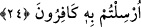

Akıllı kişi, hidâyet üzere olan bahtiyar kulların izini takip edip yakin ve müşâhede
sahiplerinin usul ve prensipleri çerçevesinde âhiret mutluluğunu elde etmeye
çalışmalıdır.
Sâib şöyle demiştir.
Sakın türlü nimetlerle dünyadan âhirete gelmeyesin,
Gam ve keder yut, fakat türlü nimetleri düşünme.
Kendini sıkıca bağlamak akıllı bir kimsenin yapacağı bir iş değildir.
Ömrünü bu zindanın tamiri için sarf etme.
24. Ben size, babalarınızı üzerinde bulduğunuz (din)den daha doğrusunu
getirmişsem (yine mi bana uymazsınız)? deyince, dediler ki: Doğrusu biz sizinle
gönderilen şeyi inkâr ediyoruz.
Ümmetlerinin babalarını taklit etme gerekçeleri karşısında onları uyaran bu
uyarıcılardan her biri “Ben size, babalarınızı, üzerinde bulduğunuz(din)den daha
doğrusunu getirmişsem (yine mi bana uymazsınız? dedi.” Oysa babalarınızı üzerinde
bulduğunuz durum tamamen sapıklık olup hidâyetle hiç alâkası yoktur. Yine de her
ümmet, kendilerini uyaran peygamberine “sizinle gönderilen mesaj bizim üzerinde
bulunduğumuz durumdan daha doğru olsa da biz babalarımızın dîni üzere kalacak, ondan
asla ayrılmayacağız. “Doğrusu biz sizinle gönderilen mesajı inkâr ediyoruz, dediler.”
Hidâyetle hiç alâkası olmayıp tamâmen sapıklıktan ibaret olan bu dalâletin sanki biraz
doğruluk payı varmış gibi “ben daha doğrusunu getirirsem” diye bahsetmek,
tartışmada insaf yoluyla onlarla beraber yürümek içindir. Sanki: “Eh, sizinki de bir din.
Fakat benim size sunduğum daha doğrudur” gibi bir şey söylemiş oluyor. Yani her
ümmet uyarıcısına “doğrusu biz sizinle gönderilen mesajı,” senin getirdiğin daha
doğru olsa da “inkâr ediyoruz” dediler. Yani “biz babalarımızın dîni üzere sâbit ve
dâim olacak, asla ondan ayrılmayacağız.”
Burada îcâz maksadıyla durumu hikaye sadedinde gâyet kısa, öz ve özet bir ifâde
kullanılmıştır. “Ey elçiler. Güzel şeylerden yiyin ve yararlı şeyler yapın” (el-
Müminûn, 23/51) âyeti de bu kabilden îcâz kasdıyla özet olarak arzedilen bir ifâdedir.
Bu ifâdede onların küfür ve sapıklıkta babalarını taklîd etmelerindeki samimiyetlerini
ikrar, düşünüp taşınmaları konusunda da uyarıcıyı ümidsizliğe düşürmek söz konusudur.
Şâir der ki:
Halkı, kendi taklidleri mahvetti,